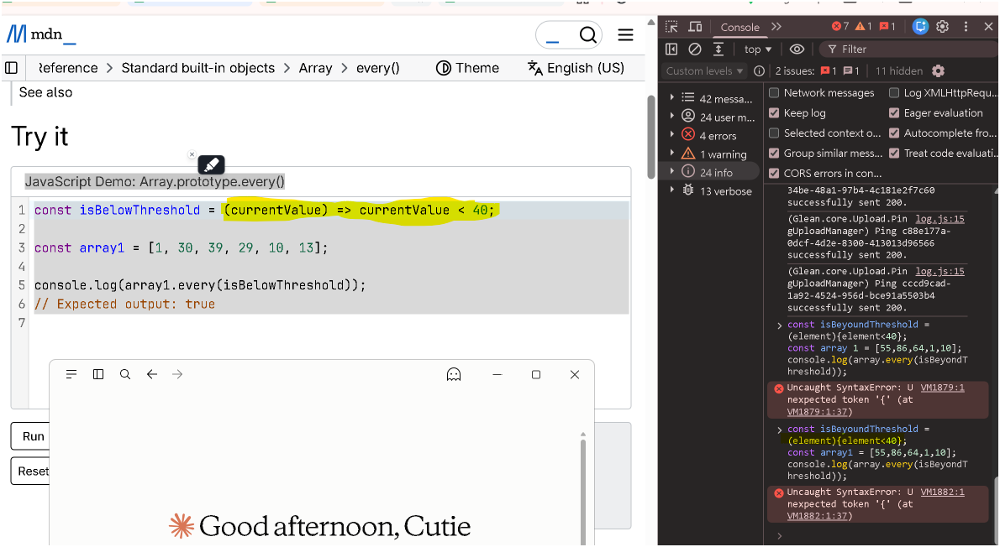

函式的四種寫法與 SyntaxError 排查
[!info] 本篇重點 a–t，共 20 個 兩場 Gemini 對話併成一條主線：先把「宣告 vs 表達式」與「具名 vs 匿名」兩條軸分開 → 再用 Abby 在 Console 踩到的
Uncaught SyntaxError: Unexpected token '{'反推引擎是怎麼 parse 的 → 最後收在「加了大括號就必須自己寫return」這個不報錯卻更陰險的陷阱。[!info] 與其他筆記的關聯（附理由） a. 深追語法細節請看 [[箭頭函式的兩組括號-參數小括弧與主體大括弧-隱式回傳]]：那篇把「參數的小括弧」與「主體的大括弧」拆成兩組獨立規則講到底，本篇只講到踩雷當下需要的程度。 b. 承接 [[09-Hoisting-函式宣告vs函式表達式-TDZ]]：本篇 g 節說「宣告可以提前呼叫、表達式不行」，那篇解釋為什麼——差別不在有沒有被 hoist，而在有沒有被初始化。 c. 對照 [[JavaScript-函式類型總整理]]：那篇是四條分類軸的完整比較表，本篇是其中兩條軸的實戰排查版。 d. 呼應 [[06-every短路求值與初始長度快照-命令式重構為宣告式]]：Abby 這次踩雷的現場就是 MDN 的
Array.prototype.every()範例頁，那篇講every本身在做什麼。 e. 呼應 [[03-陳述式-Statement-vs-表達式-Expression]]：本篇 h 節「引擎在=右邊期待一個表達式」的整個推論，地基都在那篇。
![[學習JS_圖解_const右邊的括號怎麼被parse-箭頭函式cover-grammar_2026-09-18.svg]]
1. 先把兩條軸分開：它們互相獨立（a–d）
[!important]+ Abby 的原問題：「是因為寫成表達式的都一定要搭配箭頭函式嗎？」 不是。「函式表達式」講的是函式出現在哪個位置，「箭頭函式」講的是函式用哪種語法寫，兩者完全正交，可以自由組合。
- (a) 軸一：函式宣告（Function Declaration）vs 函式表達式（Function Expression）
- 以
function這個關鍵字開頭、獨立成一句的是宣告。 - 被放在「需要一個值」的位置（賦值右邊、當引數、當回傳值）的是表達式。
- 以
- (b) 軸二：具名（Named）vs 匿名（Anonymous）
- 指的是
function後面有沒有寫名字，跟變數叫什麼無關。 const greet = function () {}裡的函式本體是匿名的，greet只是綁著它的變數。
- 指的是
- (c) ★ 兩軸交叉後的四格，四格都合法：
用 function 關鍵字 |
用箭頭 => |
|
|---|---|---|
| 宣告位置 | function f(x) { return x < 40; } |
不存在，箭頭函式只能是表達式 |
| 表達式位置 | const f = function (x) { return x < 40; }; |
const f = (x) => x < 40; |
- (d) 所以「寫成
const xxx = ...就一定要用箭頭函式」是錯的，const f = function (x) { ... }完全合法，只是現代寫法偏好箭頭。
2. 那行 Console 到底錯在哪：Unexpected token '{'（e–j）

現場：MDN
Array.prototype.every()的範例頁，Console 連丟兩次Uncaught SyntaxError: Unexpected token '{'。
- (e) Abby 寫的是：
const isBeyondThreshold = (element){element < 40}; // ❌ SyntaxError
- (f) 引擎讀到
const isBeyondThreshold =之後，接下來只接受一個表達式（因為=右邊要的是一個值）。 - (g) 接著讀到
(element)，這時它還不知道這是什麼。JS 規格用一種叫 cover grammar 的手法先把它暫存成「可能是括號表達式、也可能是箭頭函式的參數列」，等下一個 token 來決定。 - (h) ★ 下一個 token 決定一切：
- 若是
=>→ 回頭把(element)重新解讀成參數列，整體是箭頭函式。✅ - 若是
{→ 沒有任何一條文法允許「括號表達式後面直接接一個區塊」，於是當場丟Unexpected token '{'。❌
- 若是
- (i) 這就是為什麼錯誤訊息指的是
{而不是(：(element)本身沒錯，錯在它後面接了引擎接不下去的東西。 - (j) 四種改法都能跑，選一種就好：
| 改法 | 寫法 | 說明 |
|---|---|---|
| 補箭頭，用 concise body | const isBeyondThreshold = (element) => element < 40; |
最短，自動回傳 |
| 補箭頭，用 block body | const isBeyondThreshold = (element) => { return element < 40; }; |
大括號在，就得自己寫 return |
| 改成函式宣告 | function isBeyondThreshold(element) { return element < 40; } |
會被 hoist，可以提前呼叫 |
| 改成傳統函式表達式 | const isBeyondThreshold = function (element) { return element < 40; }; |
補上 function 關鍵字，引擎就知道你要哪一種 |
// 用宣告出來的函式餵給 every，兩種都行
function isBeyondThreshold(element) { return element < 40; }
const array1 = [55, 86, 64, 1, 10];
console.log(array1.every(isBeyondThreshold)); // false
// 或直接把匿名的傳統函式當 callback 傳進去
console.log(array1.every(function (element) { return element < 40; })); // false
[!tip]+ DevTools Console 貼多行程式碼的小技巧 - (r) 在 Console 裡按
Shift + Enter是換行，按Enter才是執行。寫 class 或多行函式時先用Shift + Enter把整段（包含最後那個}）寫完再送出，才不會因為括號沒收尾而被判SyntaxError。 - 同一場對話裡 Abby 的class Dog { ... }報錯也是同一個病根：最外層的}漏掉，引擎以為 class 還沒結束，讀到下一行的const myDog就爆。
3. 有大括號就得自己 return：concise body vs block body（k–n）
[!warning]+ 名詞先澄清 - (k) Gemini 說的「多行程式塊」指的是語法形態，不是你在編輯器裡實際敲了幾行。就算全部擠在同一行，只要有
{}，它就是 block body。
- (l) concise body（簡潔主體）＝箭頭後面直接接一個表達式，沒有大括號，引擎自動回傳那個表達式的值。
- (m) block body（區塊主體）＝箭頭後面接
{}，引擎不會自動回傳，沒寫return就回undefined。 - (n) ⚠️ 這個錯比 (e) 那個更陰險，因為它不報錯，只是默默給你錯的答案：
// 有大括號卻沒寫 return → 每次呼叫都回 undefined（falsy）
const isBeyondThreshold = (element) => { element < 40 };
[55, 86, 64, 1, 10].every(isBeyondThreshold); // false —— 看起來「對」，其實是誤打誤撞
// 換成應該要是 true 的資料就露餡了
[1, 2, 3].every((e) => { e < 40 }); // false ← 錯！正確答案是 true
[1, 2, 3].every((e) => e < 40); // true ← 這才對
| 形態 | 寫法 | 要自己寫 return 嗎 |
|---|---|---|
| concise body | (x) => x < 40 |
不用，自動回傳 |
| block body | (x) => { return x < 40; } |
必須寫，否則回 undefined |
| 傳統函式 | function (x) { return x < 40; } |
必須寫，否則回 undefined |
4. 傳統匿名函式的三種常見場景（o–q）
- (o) 用
function關鍵字定義的「傳統函式」完全可以是匿名的，最常出現在下面三個位置：
- 函式表達式（Function Expression）：把沒名字的函式賦值給變數，變數名代表該函式，但函式本體本身是匿名的。
const greet = function () { console.log("Hello World"); };
greet();
- 立即執行函式（IIFE）：定義當下立刻執行，常用來建立獨立作用域、避免污染全域變數。
(function () { console.log("立刻執行，且沒有名字"); })();
- 回呼函式（Callback）：直接當參數傳給其他方法，事件監聽與非同步最常見。
setTimeout(function () { console.log("延遲 1 秒後執行"); }, 1000);
- (p) 現代多用箭頭函式取代，但兩者行為關鍵不同，不只是寫法長短：
| 面向 | 傳統匿名函式 | 箭頭函式 |
|---|---|---|
this 綁定 |
動態綁定：取決於「呼叫時」的上下文 | 沒有自己的 this，繼承「定義時」外層環境（靜態） |
arguments |
內部可用 arguments 存取所有傳入參數 |
不支援 arguments |
能不能 new |
可以，是建構函式 | 不行，會丟 TypeError |
有沒有 prototype 屬性 |
有 | 沒有 |
- (q) 宣告與表達式還有一個執行期差異：函式宣告在進入作用域時就連名帶身體一起就緒，可以提前呼叫；
const／let的函式表達式只建綁定不初始化，提前呼叫會撞 TDZ 丟ReferenceError。理由見 [[09-Hoisting-函式宣告vs函式表達式-TDZ]]。
6. 箭頭函式 vs Callback：不是同一個維度（s–t）
-
(s) 「箭頭函式」與「Callback」不能劃等號，兩者根本不是同一個分類軸：箭頭函式是寫法／語法格式（用
() => {}定義函式的其中一種方式），Callback 是角色／使用情境（被當成參數傳進另一個函式、等未來某個時機被回頭呼叫的那個函式）。可以用箭頭函式寫 Callback，也可以用傳統function寫 Callback——兩者是不同維度，不是誰包含誰。 -
(t) 誰是 Callback？「被呼叫」的那個才是，不是「主動呼叫別人」的那個。以
setTimeout(myCallback, 3000)為例：setTimeout是主動執行、發起呼叫的那一方；myCallback是被傳進去、等 3 秒後被setTimeout回頭呼叫（call back）的那一方，所以myCallback才是 Callback 函式，setTimeout不是。
// 1. 被動等待執行的函式（這是 Callback）
const myCallback = () => {
console.log("3 秒到了！");
};
// 2. 主動呼叫別人的函式（setTimeout 是主呼叫者，不是 Callback）
setTimeout(myCallback, 3000);
5. ⚠️ 存疑／更正（Gemini 講得不夠精確的地方）
| Gemini 原文 | 問題 | 補正 |
|---|---|---|
把「漏掉 =>」與「漏掉 return」並列成「兩個語法錯誤」 |
只有前者是 SyntaxError，後者根本不報錯，會靜默回傳 undefined |
兩者嚴重性完全不同：前者當場爆、後者是邏輯 bug，要分開講 |
| 「漏掉花括號內的 return，否則預設會回傳 undefined」 | 說法沒錯，但沒說清楚這跟傳統函式是同一條規則，不是箭頭函式特有 | 只要是 block body（含傳統 function），一律不自動回傳 |
| 只說「語法解析器不知道你要寫哪一種」 | 講對了方向但沒講機制 | 規格上的名詞是 cover grammar：(element) 先被暫存成兩義，等下一個 token（=> 或其他）才定案，見 h 節 |
對應題目練習
- LeetCode 2667. Create Hello World Function — 最小規模的「回傳一個函式」，逼你分清楚回傳函式本身與回傳呼叫結果
- LeetCode 2620. Counter — 表達式位置的函式＋閉包，正好驗收第 1 節兩條軸
- LeetCode 2634. Filter Elements from Array — callback 寫成 concise body 還是 block body，寫錯就回
undefined，直球考第 3 節 - LeetCode 2666. Allow One Function Call — 傳統函式與箭頭函式在
this／arguments上的差異會真的影響解法
各對話來源（原文摘要）
傳統函式可否為匿名函式（2026-06）— https://gemini.google.com/app/1c2e605259537e41
function 關鍵字定義）完全可以是匿名函式，常見三種形式——① 函式表達式 const greet = function () {...}，變數名代表函式、函式本體匿名；② IIFE (function () {...})()，建立獨立作用域、避免污染全域；③ 回呼函式如 setTimeout(function () {...}, 1000)，當參數傳給其他方法。傳統匿名函式與箭頭函式的關鍵差異在 this（動態綁定 vs 繼承定義時外層環境）與 arguments（可用 vs 不支援）。JavaScript 函式寫法與錯誤解析（2026-09）— https://gemini.google.com/app/a934bc9778ee91b7
Uncaught SyntaxError 是因為語法寫錯，不是因為不能改寫成一般函式。const isBeyondThreshold = (element){element < 40}; 有兩個問題——漏掉箭頭 =>，以及若用了花括號就必須手動寫 return。這不算一般函式，而是「語法不完整的箭頭函式」。正確傳入 .every() 的方式有兩種：先宣告一般函式再傳入，或直接在 .every() 內部寫匿名一般函式。undefined。function 或箭頭 => 都可以。報錯的原因是寫了 (element){ ... }，引擎在 const 後面既找不到 function 關鍵字、又找不到箭頭 =>，不知道你要寫哪一種，所以丟 SyntaxError。追加 2026-09-25（箭頭函式與 Callback 差異解析）— https://gemini.google.com/app/e68544230e0b356d
function 寫 Callback。誰是 Callback 的判準是「被呼叫」的那一個——setTimeout(myCallback, 3000) 中 setTimeout 是主呼叫者，myCallback 才是 Callback。資料來源（含查證時間）
| 主題 | 連結 | 版本／時間 |
|---|---|---|
| 踩雷現場的範例頁 Array.prototype.every | https://developer.mozilla.org/en-US/docs/Web/JavaScript/Reference/Global_Objects/Array/every | MDN，2026-09-18 查證 |
| 箭頭函式語法與 concise／block body | https://developer.mozilla.org/en-US/docs/Web/JavaScript/Reference/Functions/Arrow_functions | MDN，2026-09-18 查證 |
| 函式表達式 function expression | https://developer.mozilla.org/en-US/docs/Web/JavaScript/Reference/Operators/function | MDN，2026-09-18 查證 |
| 函式宣告 function declaration | https://developer.mozilla.org/en-US/docs/Web/JavaScript/Reference/Statements/function | MDN，2026-09-18 查證 |
| IIFE 術語定義 | https://developer.mozilla.org/en-US/docs/Glossary/IIFE | MDN，2026-09-18 查證 |
| 規範原文 ArrowFunction 與 cover grammar | https://tc39.es/ecma262/#sec-arrow-function-definitions | ECMA-262，2026-09-18 查證 |
| Console 多行輸入與 Shift+Enter | https://developer.chrome.com/docs/devtools/console/reference | Chrome DevTools 文件，2026-09-18 查證 |